for every fair reader and reader of the Prophet’s biography, he knows very well that the Prophet, peace and blessings be upon him, made a treaty with the Jews of Banu Qurayza, and they were at that time part of the state and they were not just allies or anything else, but rather they were from the state, and the conditions of these The treaty is as follows:
1 That the Jews of Bani Awf are a nation with the believers, the Jews have their religion and the Muslims their religion, their guardians and themselves.
2 The Jews have to spend on them, and the Muslims have to spend on them.
3 And that among them victory over those who fought the people of this newspaper.
4 And that among them advice and advice, and righteousness without sin.
5 And that no man should sin against his ally.
6 And that victory is for the oppressed.
7- And that the Jews spend with the believers as long as they are at war.
8 And for the people of this newspaper to drink its hollow is forbidden.
9- And that whatever happened between the people of this newspaper of any event or quarrel that he fears spoiling, then it is attributed to God, and to Muhammad, the Messenger of God.
10 - And that neither the Quraish nor those who helped it.
11- And that among them victory over those who attacked Yathrib... over all people who had their share from their side who accepted them.
12- And that this book does not prevent an oppressor or a sinner (2).
Therefore, this treaty enjoins peace between Muslims and Jews, as well as the protection of Medina. It also forbids Jews from trading with the Quraysh who are the sweet enemy of Medina (the state of Muslims and Jews at that time) so that there is no alliance between them. The Muslims respected these conditions as they lasted for five years.
Third, did the Jews respect the treaty?
This is the main reason behind the killing of Banu Qurayzah, as will be detailed, for they broke the treaty and allied themselves with the Quraish. After the armies of the parties surrounded Medina with ten thousand fighters from the polytheists of Quraish, Ghatafan, Ashja’, Asad, Fazara and Banu Salim, while the number of Muslims did not exceed three thousand fighters. (3).
And the calamity on the Muslims had intensified during the Battle of Al-Ahzab. Umm Salamah, the Mother of the Believers, may God be pleased with her, said as she illustrated the horror of the situation:
(I witnessed with the Messenger of God, may God’s prayers and peace be upon him, scenes of fighting and fear. Al-Fath and Hunayn, this was not more difficult for the Messenger of God, may God’s prayers and peace be upon him, nor was I more afraid of the trench for us, because the Muslims were in a critical situation, and Qurayzah was not safe from our offspring.
It was expected that after this siege and the severity of this calamity, the Jews of Banu Qurayza would join the ranks of the Muslims against the advancing forces on Medina, based on the texts of the treaty concluded between the two parties, but what happened is the exact opposite! The Banu Qurayza were not satisfied with mere negativity, but the Muslims were surprised by them betraying them in the most dangerous time of their plight, and they did not observe the sanctity of covenants, in order to hasten the crushing of Muslims and their complete elimination.
Ibn Kathir, may God have mercy on him, said:
Ibn Ishaq said: Huyay bin Akhtab al-Nadari went out, until Ka’b bin Asad al-Qurazi, the owner of their contract and covenant, came. He said, Woe to you, O Hayy, that you are an ominous person, and that I have made a covenant with Muhammad, so I do not contradict what is between me and him, and I have not seen anything from him except loyalty and honesty. He said: Woe to you, open up for me to speak to you. He said: What am I doing? He said, by God, if you close me, except for fear of your army, I will eat with you from it. So the man preserved it, so he opened it to him and said: Woe to you, Ka’b! He said: I brought you Quraysh over its leaders and its masters, until you brought them down with the community of Al-Asyal from Rome and Ghatafan over its leaders and masters, until I brought them down for a sin of reprimand on the side of someone, and they promised me and they promised me that they would not leave until we extirpated Muhammad and those with him. Ka'b said: You have come to me, God gave eternity, and Juham has spilled its water, thundering and lightning, and there is nothing in it, and it is scratching, O Hayy! So leave me and what I am upon, for I have not seen anything from Muhammad but loyalty and honesty.Amr bin Saad Al-Qurazi spoke and did well in what Musa bin Uqbah mentioned: He reminded them of the covenant and covenant of the Messenger of God, may God bless him and grant him peace, and their contract with him on his victory, and he said: If you do not help him, leave him and his enemy. Ibn Ishaq said, “My life continued with a heel twisting it in the midst and west until he heard him - that is, in breaking the covenant of the Messenger of God, peace and blessings be upon him, and in his war with the parties — that Hayya gave him the covenant and covenant of God, and if the Quraysh and Ghatfan return and they do not harm Muhammad
I will enter with you in your fortress until What happened to you hurts me. Kaab bin Asad broke the covenant and acquitted himself of what was between him and the Messenger of God, may God bless him and grant him peace.. (5)
Then the Jews of the village have sent war operations, and they sent a man of them
. Hassan bin Thabit, Hassan bin Thabit was with with women and boys where the trench of the Prophet (peace and blessings of Allaah be upon him) said: "It was a man of Jews, and he made a man of a mask, and he fought by a village, and cut between them and the Messenger of Allaah (peace and blessings of Allaah be upon him). , And the Messenger of Allaah (peace and blessings of Allaah be upon him) and his companions. At the pillar until I killed him, then I went back to the fort and said:O Hassan, go down and take him away, for nothing prevented me from taking him away except that he is a man.
And through what I narrated to the honorable reader, and after a fair reading, it becomes clear to us that the Muslims were very fair, so what the Jews did is called high treason (which is punishable by death or life imprisonment (for more clarification, please review Wikipedia Encyclopedia)) , their goal in all of this was The eradication of the Muslims and their complete extermination, had it not been for the intervention of God Almighty and Majestic to support the faith and its people and defeat polytheism and its party, and God willed that the Jewish pagan alliance be vanquished {And God answered those who disbelieved in their wrath, the parties would not have destroyed them} (verse 25). The Muslims were exterminated and killed. And after the polytheists and their allies turned away, carrying with them all the meanings of failure, the Muslims returned to their homes in Medina, washing themselves from the infirmities of jihad and fatigue, and catching their breath after a deep psychological anxiety that lasted an entire month. As for Qurayzah, it is proven in the hadith that he killed their fighters and left everything else. The Prophet, may God bless him and grant him peace, made a covenant with the Jews of Banu Qurayzah, but they broke the covenant and sided with the polytheists in the Battle of the Trench. The dress of war, Gabriel, peace be upon him, came to him and ordered him to go to Banu Qurayza, then Saad bin Muadh judged them and said: I judge them to kill the female fighter, to take the children and women into captivity, and to divide the money, in the two Sahihs and this is the wording of Muslim:
where? , He pointed to the sons of the village and achieved the Messenger of Allaah (peace and blessings of Allaah be upon him).Indeed, I judge among them that the female fighter should be killed , that the offspring and women should be taken captive, and that their property should be divided” (7)
As we see my brothers in God, Saad, may God be pleased with him, ordered the killing of the female fighter, and this is from the guidance of the Prophet of God, peace and blessings be upon him, and he did not kill anyone else, so on the authority of Buraidah, he said: The Messenger of God (if he ordered a commander to command an army or a company, he commanded him in his own to fear God and fear God From the Muslims good, he said: They were briefed in the name of God in the way of Allah, fought from Kafr in God, they were briefed and do not work, and do not represent, and do not represent, and do not kill, and do not kill, and do not kill, and do not kill me. Then invite them to Islam, and if they respond to you, accept it from them, then invite them to move from their home to the home of the immigrants.. (8)
Summary:
We conclude from the foregoing, dear reader, as follows:
1- The killing of Banu Qurayzah had a reason, which was high treason and aiding the enemy against the Muslims
2- Killing the female fighter among them and releasing those who embraced Islam
3- The number of dead was between 40 and 400
4- The killing of anyone who bred any of them He reached and were warriors.
5- The penalty for high treason is death or life imprisonmen
Research sources:
(1) The Biography of the Prophet - Ibn Hisham - vol. 3 - p. 721, as mentioned by Ibn Kathir, may God have mercy on him, in the Biography of the Prophet - vol. 2 - p. 239 and others..
(2) The Biography of the Prophet - Ibn Hisham - vol. 1 p. 503 / 504
(3) The Biography of the Prophet - Ibn Hisham - Part 1 - Pg. 51
(4) In the Shadows of the Qur'an, Part 21/548 i, 7th year 1391 AH.
(5) The Biography of the Prophet - Ibn Kathir - Part 3 - p. 118
(6) The Biography of the Prophet - Ibn Hisham - Part 3 - pg 711
(7) Sahih Imam - may God have mercy on him - Hadith No. 3321
(8) Sahih Imam - may God have mercy on him - No. Hadith 1731, and the Musnad of Imam Ahmad - may God have mercy on him - Hadith No. 193
(9) Money for Ibn Zanjaweh - may God have mercy on him - Hadith No. 359
(10) Sahih Al-Tirmidhi, may God have mercy on him - Hadith No. 1582, as authenticated by Al-Albani and Ibn Hajar Al-Asqalani, may God have mercy on them.
(11) Sahih Imam al-Bukhari, may God have mercy on him - Hadith No. 2851, and it was narrated by Imam Muslim, may God have mercy on him - No. 1744
(12) Narrated by Ibn Abi Shaybah, may God have mercy on him, in Manuscript No. page 656
(13) Abu Dawood: The Book of Jihad, chapter on the supplication of the enemy ( 2614), Ibn Abi Shaybah 6/483, and al-Bayhaqi in his Sunan al-Kubra (17932).
(14) Nayl Al-Awtar by Imam Al-Shawkani, may God have mercy on him (7/290) No. 3325
(15) Fath Al-Bari Sharh Sahih Al-Bukhari (6/147)
(16) Narrated by Abu Dawood (2669) and authenticated by Al-Albani
Only fighters but Women and children?
Narrated Atiyyah al-Qurazi:
I was among the captives of Banu Qurayzah. They (the Companions) examined us, and those who had begun to grow hair (pubes) were killed, and those who had not were not killed. I was among those who had not grown hair.
-Source: Sunan Abi Dawud 4404
Grade: Sahih (authentic) (Al-Albani)
Narrated Aisha, Ummul Mu'minin:
No woman of Banu Qurayzah was killed except one. She was with me, talking and laughing on her back and belly (extremely), while the Messenger of Allah (ﷺ) was killing her people with the swords. Suddenly a man called her name: Where is so-and-so? She said: I I asked: What is the matter with you? She said: I did a new act. She said: The man took her and beheaded her. She said: I will not forget that she was laughing extremely although she knew that she would be killed.
-Source: Sunan Abi Dawud 2671
Grade: Sahih (authentic) (Darussalam)
This is their punishement they could have nearly ended Islam because of their treason the prophet forgave them once they turned back to it they nearly could have ended Islam and they themselves chose the punishment
Now for the arguments of kids being killed the ones who have reached this according to a’wn al-ma’bood were fighters so they could fight and kill them so they must be exterminated
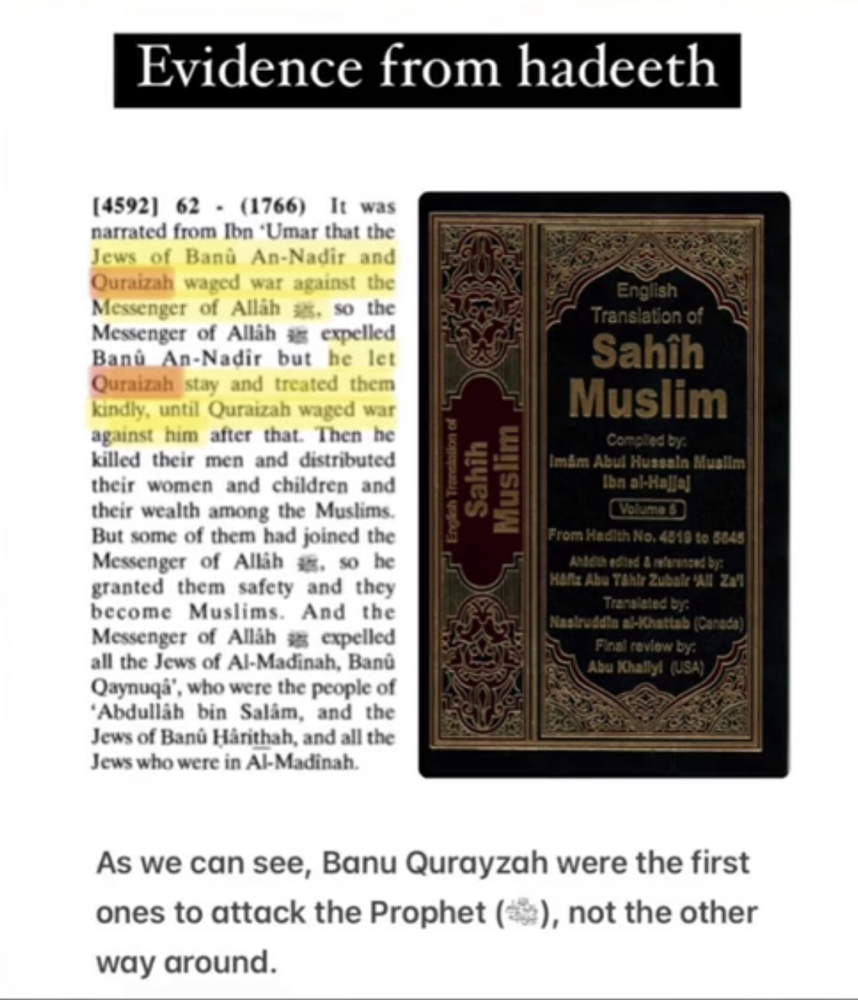
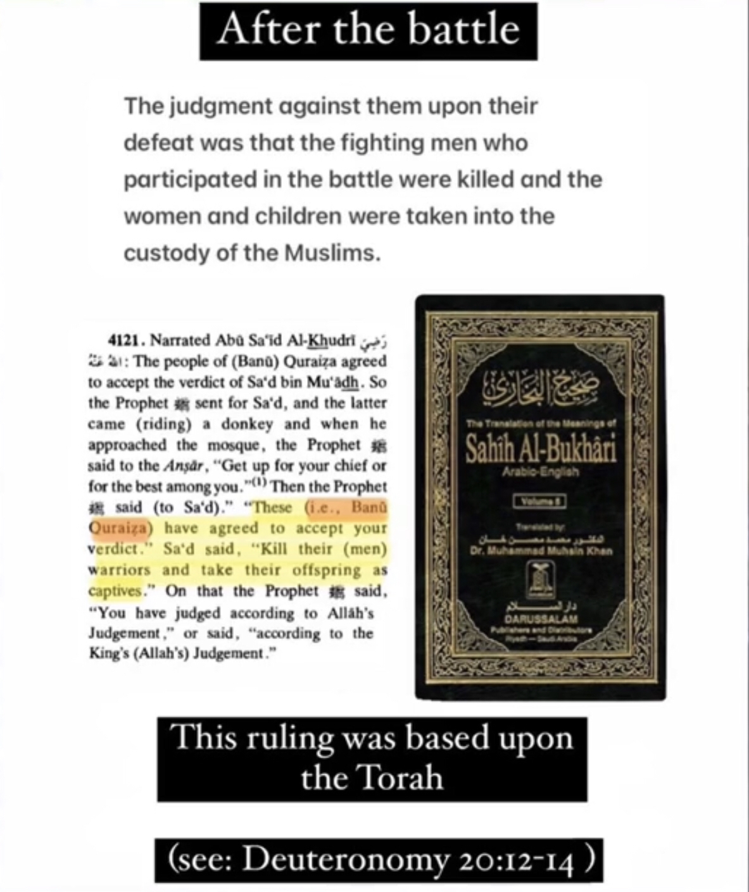
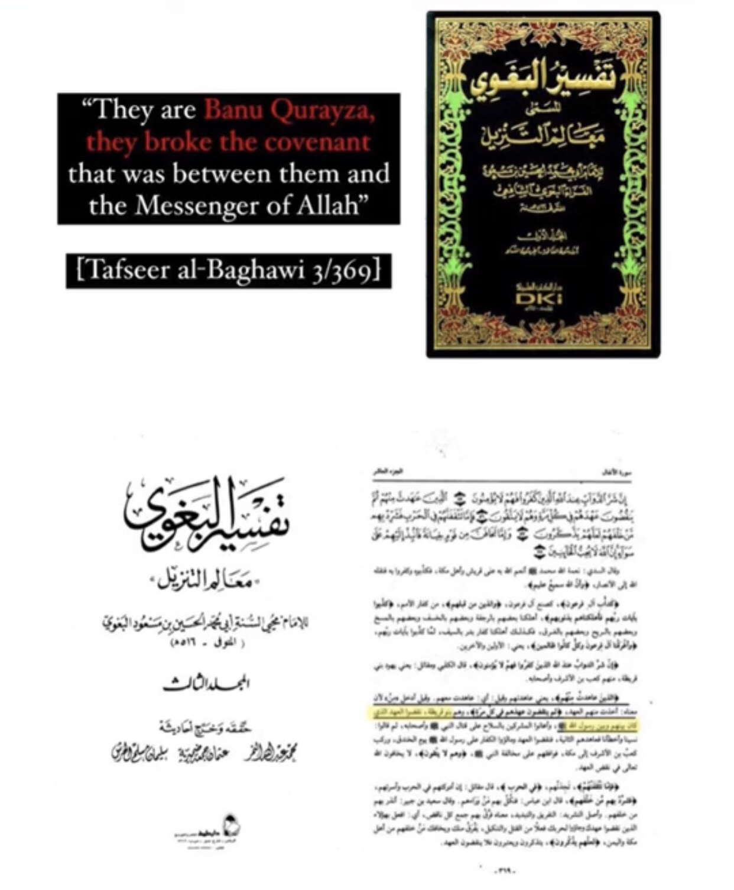
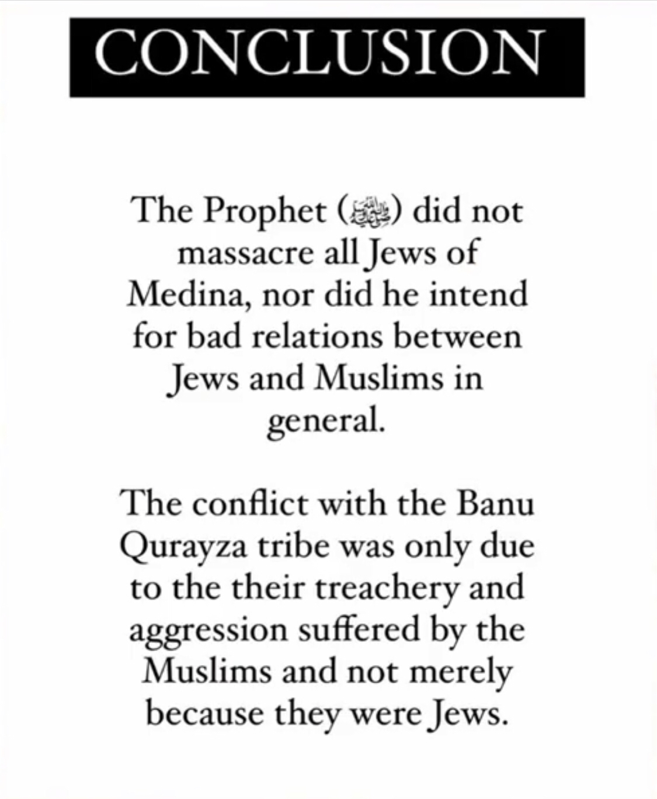
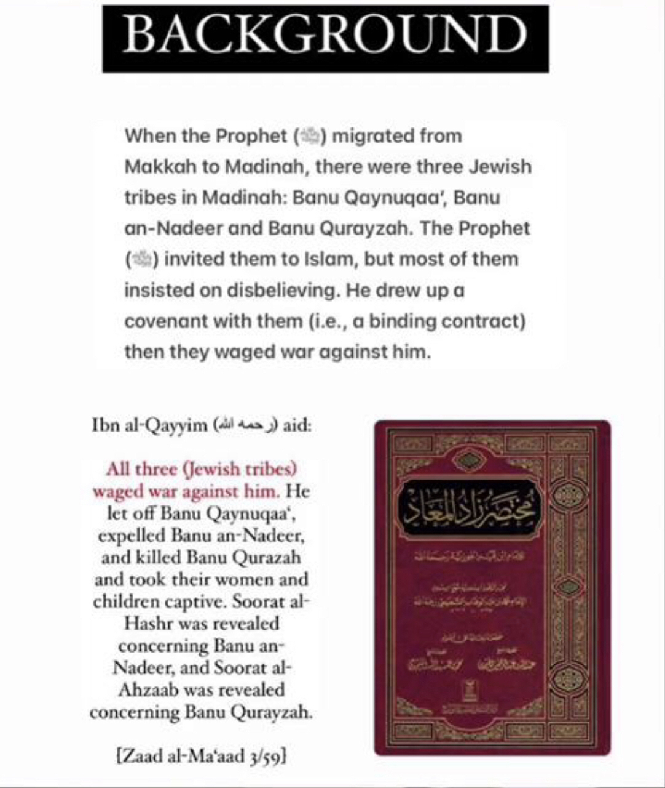
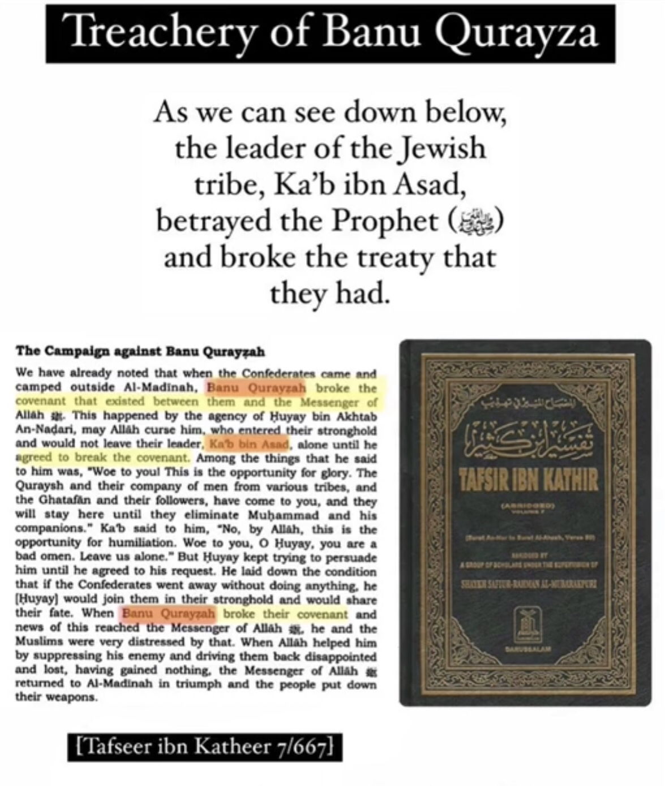
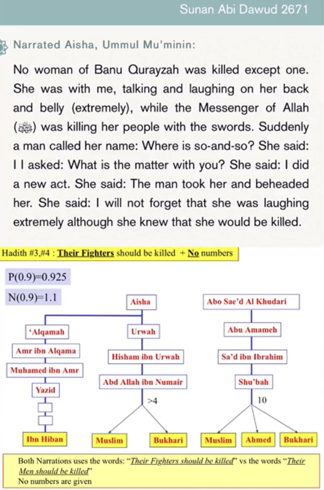
Now lets look at what later on happened in banu al-nadir
So the Muslims and Banu Al Nadeer had a truce so the prophet asked the military help from them so they accepted and they invited the prophet to their tribe and they decided to kill him which is a clear violation to the covenant of peace that they had and when God showed him that, the propeht went to medina and gave them 10 days to exile (which shows that thr prophet gave them a chance to leave) but they refused and so the prophet prepared for war with Banu Al Nadeer and this is in details in any seerah book and here's an example:
فصل
ثم نقض العهد بنو النضير ، قال البخاري : وكان ذلك بعد بدر بستة أشهر ، قاله عروة وسبب ذلك أنه صلى الله عليه وسلم خرج إليهم في نفر من أصحابه ، وكلمهم أن يعينوه في دية الكلابيين اللذين قتلهما عمرو بن أمية الضمري ، فقالوا : نفعل يا أبا القاسم ، اجلس هاهنا حتى نقضي حاجتك ، وخلا بعضهم ببعض ، وسول لهم الشيطان الشقاء الذي كتب عليهم ، فتآمروا بقتله صلى الله عليه وسلم ، وقالوا : أيكم يأخذ هذه الرحا ويصعد ، فيلقيها على رأسه يشدخه بها ؟ فقال : أشقاهم عمرو بن جحاش : أنا ، فقال : لهم سلام بن مشكم : لا تفعلوا فوالله ليخبرن بما هممتم به ، وإنه لنقض العهد الذي بيننا وبينه ، وجاء الوحي على الفور إليه من ربه تبارك وتعالى بما هموا به ، فنهض مسرعا ، وتوجه إلى المدينة ، ولحقه أصحابه ، فقالوا : نهضت ولم نشعر بك ، فأخبرهم بما همت يهود به ، وبعث إليهم رسول الله صلى الله عليه وسلم أن اخرجوا من المدينة ، ولا تساكنوني بها ، وقد أجلتكم عشرا ، فمن وجدت بعد ذلك بها ، ضربت عنقه ، فأقاموا أياما يتجهزون ، وأرسل إليهم المنافق عبد الله بن أبي : أن لا تخرجوا من دياركم ، فإن معي ألفين يدخلون معكم حصنكم ، فيموتون دونكم ، وتنصركم قريظة وحلفاؤكم من غطفان ، وطمع رئيسهم حيي بن أخطب فيما قال له ، وبعث إلى رسول الله - صلى الله عليه وسلم - يقول : إنا لا نخرج من ديارنا ، فاصنع ما بدا لك ، فكبر رسول الله صلى الله عليه وسلم وأصحابه ، ونهضوا إليه ، وعلي بن أبي طالب يحمل اللواء ، فلما انتهى إليهم ، قاموا على حصونهم يرمون بالنبل والحجارة
زاد المعاد (١١٦)
Now for what happened at khaybar
Translation: “and the Jews at khaybar are the essence of all the evil they are the ones that convinced the Jewish tribes to break the treaty and who gathered the ahzab against the prophet in ghazwat al-ahzab so it was nessecary to get rid of the Jews at khaybar since they could destroyed Islam and they were the source of evil in the place”
-Source: Subul al-salam page number 463
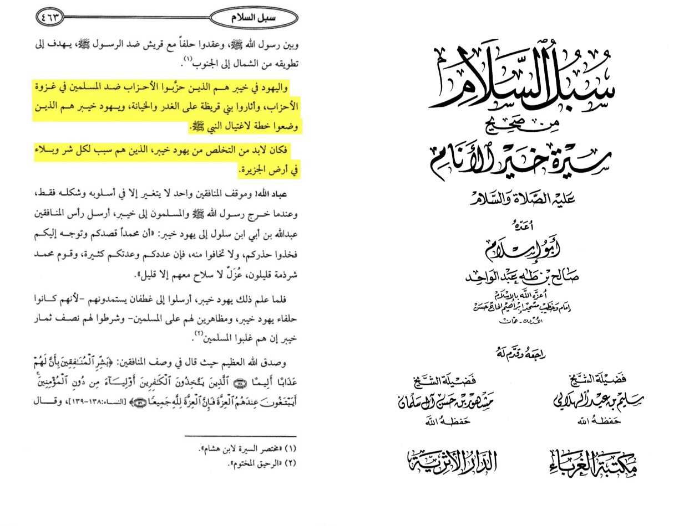
https://discover-the-truth.com/2016/01/01/re-examining-banu-qurayzah-incident/
Translation: “whoever got pubic hair has became a pubescent then one of the muqatila (fighters)”
‘Awn al-Ma’bud pp.#2036-2037
 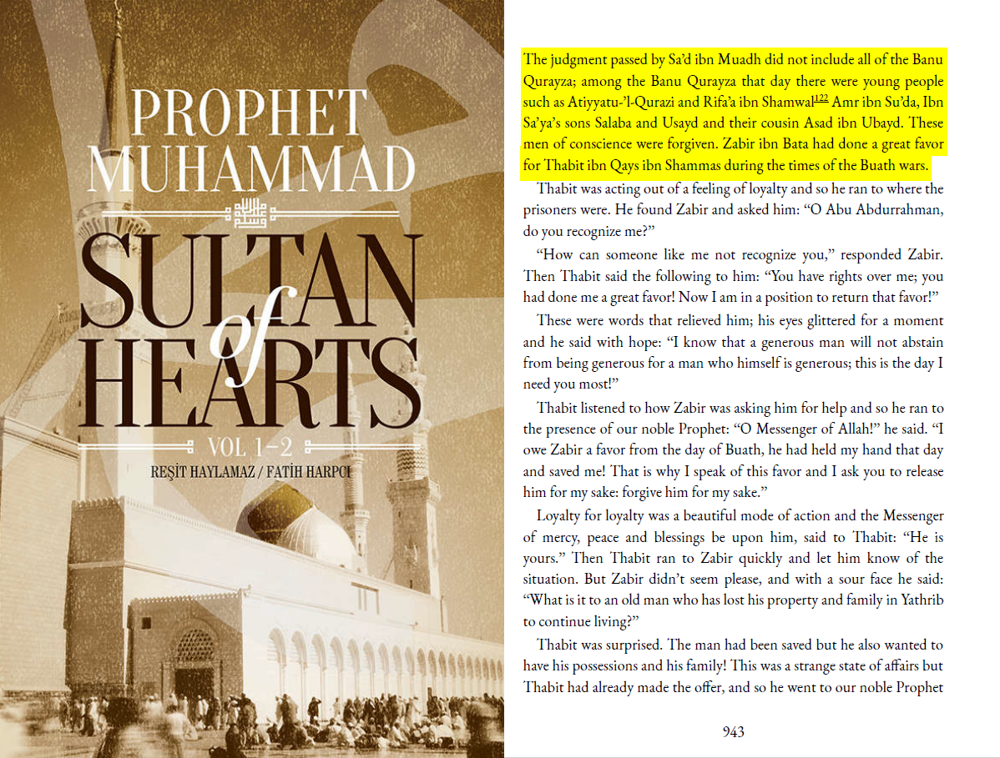
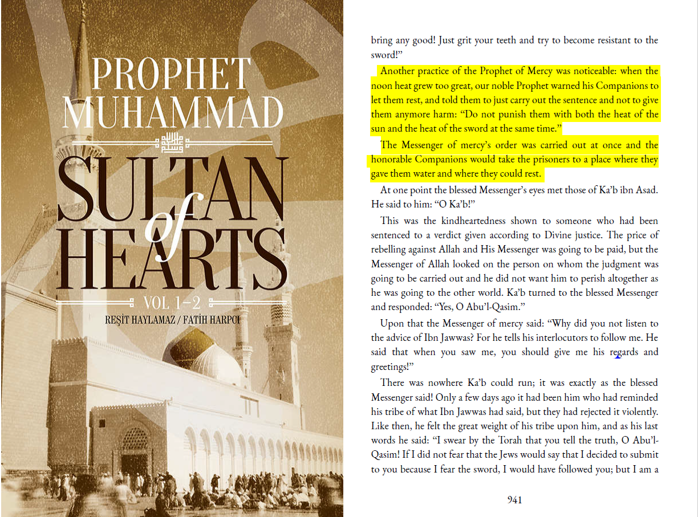
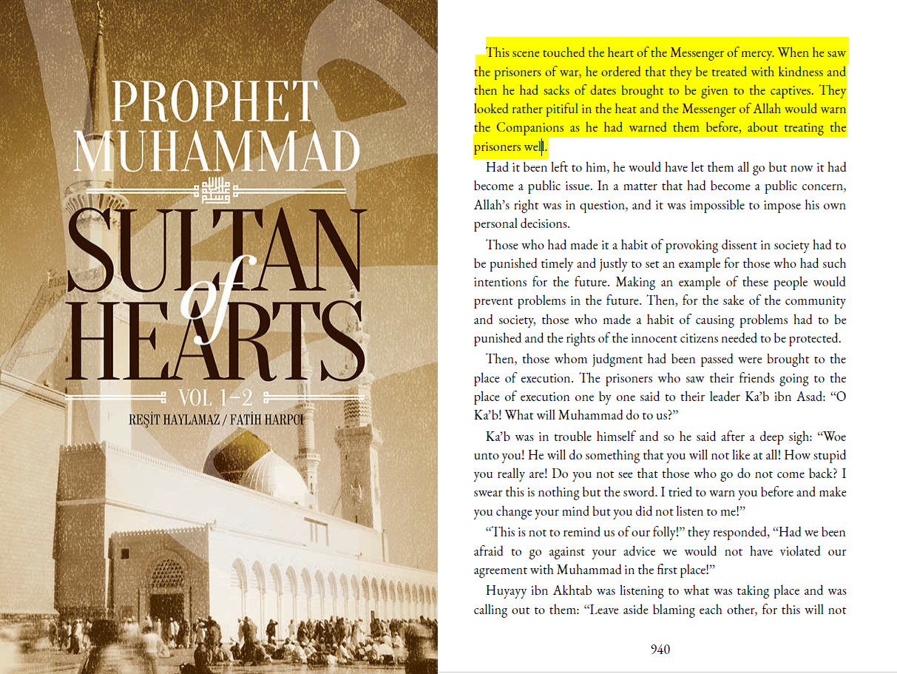
Killing a woman in Sunan Abi dawud 2671
Only 1 women was killed
She was killed because she killed the companion of the prophet
Ibn hisham (d. 213 AH) commentates:
قَالَ ابْنُ هِشَامٍ: وَهِيَ الَّتِي طَرَحَتْ الرَّحَا عَلَى خَلَّادِ بْنِ سُوَيْدٍ، فَقَتَلَتْهُ.
And she is the one who threw spikes at Khalād bin suwayd so she caused his death.
Source: Sīrat Ibn hisham 2/242
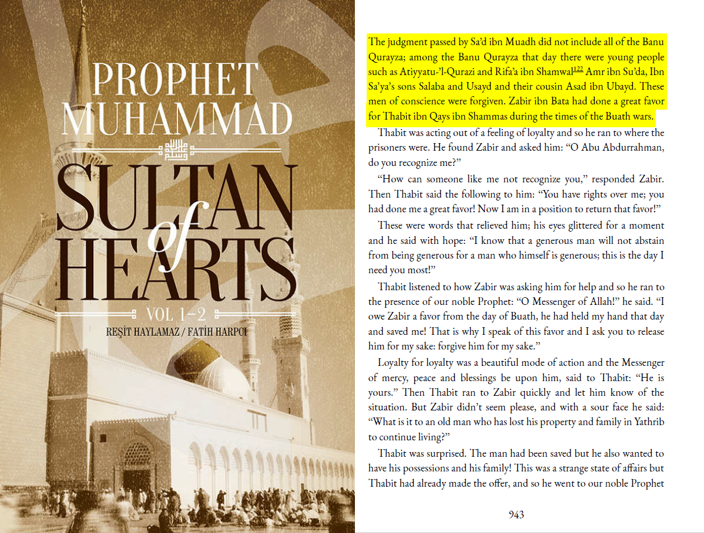
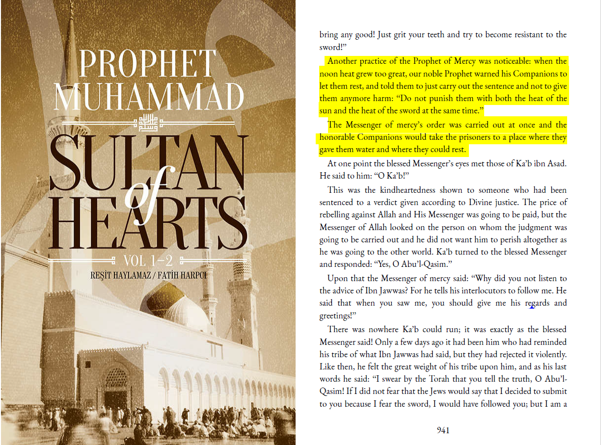
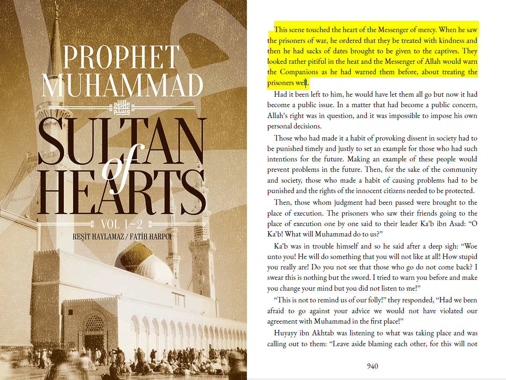
Killing a woman in Sunan Abi dawud 2671
Only 1 women was killed
She was killed because she killed the companion of the prophet
Ibn hisham (d. 213 AH) commentates:
قَالَ ابْنُ هِشَامٍ: وَهِيَ الَّتِي طَرَحَتْ الرَّحَا عَلَى خَلَّادِ بْنِ سُوَيْدٍ، فَقَتَلَتْهُ.
And she is the one who threw spikes at Khalād bin suwayd so she caused his death.
Source: Sīrat Ibn hisham 2/242